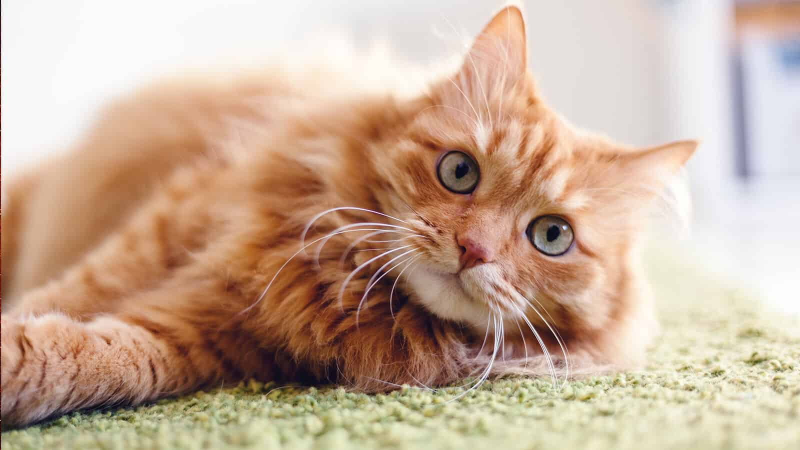
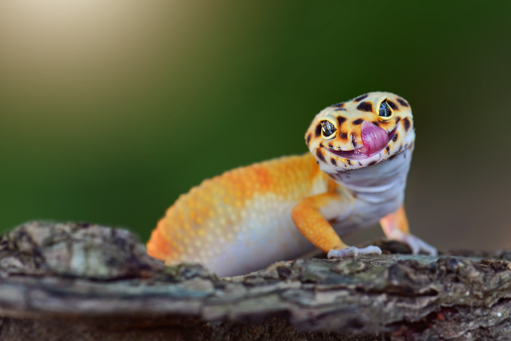

Did you know that otters hold hands when they sleep so that they don't drift away from eachother?
This is why they are holding hands in this picture!
Rank #2: Frilled Lizard

There are many different breeds of cats with their own unique markings and fur colors. I am a cat
person and have always had a soft spot for orange tabbys.
Rank #3: Geckos

Back in elementary school, we did a research project and mine was on geckos. I instantly fell in love
with the adorable little lizards, and I have always wanted one.